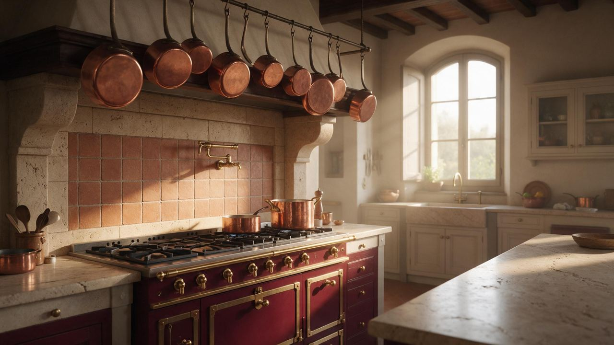

Speak from lesson one
Every lesson is a real situation in an Italian city: you order, ask, book and chat, live.

Club Italia, structured collection
CEFR A1.1 to A1.2, live from Florence
You can say ciao. Now you hold real conversations: twenty live lessons through the markets, workshops and piazzas of Florence.
Every course includes the live lessons, class recordings, your AI practice coach and a CEFR certificate when you complete the level.
Every lesson is a real situation in an Italian city: you order, ask, book and chat, live.
Each unit introduces one structure and puts it straight into conversation.
Your teacher lives in the city you study, and brings it to your screen.
Your teacher lives in Florence and teaches from there. The city, its streets and its tables are part of every lesson.
Five modules of four units, one live lesson a week. Pick a module and read exactly what you will be able to say after each lesson.
Module 1, The language of Florence. Why Italian is Tuscan, then the two past tenses for telling what happened and describing how things were.
Understand why modern Italian comes from Tuscany and meet Dante, Petrarch and Boccaccio. You refresh everything from Level 1 in conversation.
Tell what happened last summer with confidence, using time expressions like yesterday and last week. You strengthen the main past tense.
Describe how things used to be and what you used to do, and choose between the two past tenses. You talk about your childhood.
Describe how someone looks and what they are like, with adjectives that agree correctly. You introduce friends and family in detail.
Module 2, People, homes and food. Describing people and homes, Tuscan cooking, and a full restaurant conversation from order to bill.
Say what is in each room and where things are. You give a guided tour of a Florentine apartment.
Talk about ingredients, quantities and how a dish is made. You learn the words behind ribollita, bistecca and cantucci.
Handle a whole restaurant visit: booking, ordering, raising a problem politely and asking for the bill. You learn how tipping works in Italy.
Ask for weights, packets and containers and compare prices. Set at the Mercato Centrale in Florence.
Module 3, Getting things done. The market, the phone, appointments and the pharmacy, in the polite register Italians expect.
Make and take a phone call, speak formally and leave a clear message. You learn the phrases Italians use on the phone.
Book a doctor, a hairdresser or an office visit and deal with formal Italian. You practise the polite register of Italian bureaucracy.
Name parts of the body, describe how you feel and ask a pharmacist for help. You learn how the Italian pharmacy works.
Describe your morning and your day with reflexive verbs and say how often you do things. You compare routines with the class.
Module 4, Life and culture. Routines, hobbies and football, Italian cinema and opinions, and your midpoint review.
Talk about hobbies, sport and what you do at the weekend. You discover Italy's passion for football and the Sunday papers.
Talk about films, describe what you saw and give your opinion. You discover Fellini and Sorrentino.
Review the first half of the level with a spoken test and a quiz on Florence. Your teacher gives you personal feedback.
Talk about plans, promises and predictions using the future tense. You describe the year ahead.
Module 5, Plans and polite Italian. The future, first hypotheticals, the conditional for requests, emails, and your A1.2 assessment.
Say what happens or would happen if something else does. You start building longer, connected sentences.
Ask for things politely and say what you would like or could do. You sound courteous in shops, hotels and offices.
Write a clear email, choosing between formal and informal style, with the right greetings and endings. You reply to a real message.
Complete your A1.2 assessment and present a piece of Italian culture to the class. You leave with your certificate and the path to Level 3.

Native teacher, live from Florence
A Florentine art historian turned language teacher, Chiara brings the Renaissance city into every lesson, with patience and warmth.
Every plan includes live lessons from Italy, recordings, your AI practice coach and your CEFR certificate. Full refund within seven days.
Monthly
$84 a week
Billed $336 a month
Best value, save 26%
Annual
$62 a week
Billed once at $3,224
One term
$73 a week
Billed $876 for twelve weeks
Level 2, Elementary covers CEFR A1.1 to A1.2. Not sure? Take the free one-minute level check or book a placement call with an advisor.
Each lesson is live on Zoom, once a week, with Chiara and a small group of 10 to 12 adults. Every lesson is recorded for you.
A Club Italia certificate stating your CEFR level, after an oral and written can-do assessment.
Yes. If the course is not right for you, you are refunded in full within seven days of your first live lesson.
Level 2, Elementary, 20 live lessons from Florence. Join a small live group.
Your advisor will email your Zoom link and course materials within one working day.
🔒 Secure CheckoutFully refundable within 7 days of your first live lesson.